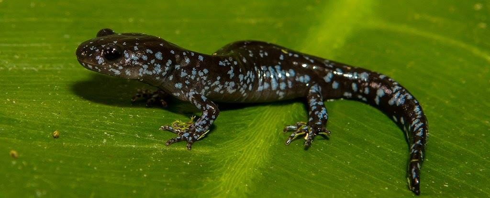

Archive · Greek science communication
The Salamander with Three Fathers
Polyploidy, kleptogenesis, hybridisation, and a reproductive system that makes the textbook definition of a species much less tidy.

Original Greek text
Χαρούμενη ημέρα του πατέρα στην πιο χιπστερ σαλαμάνδρα με τους τρεις πατεράδες. Στην εικόνα βλέπεις την πρώτη πολυγαμική Σαλαμάνδρα με γενετικό υλικό από τρείς αρσενικούς γονείς και είναι η καλύτερη ιστορία που διάβασες σήμερα. Φυσιολογικά όλοι είμαστε διπλοειδείς οργανισμοί έχοντας ένα σετ χρωμοσωμάτων, δηλαδή πακεταρισμένων τμημάτων DNA από τον κάθε γονέα μας. Οι σαλαμάνδρες του γένους Ambystoma όπως αυτή do it better tho. Έχουν τρία ως και πέντε σετ χρωμοσωμάτων και εμφανίζουν ένα φαινόμενο που ονομάζεται πολυπλοειδία. Οι ίδιες σαλαμάνδρες αναπαράγονται επίσης με παρθενογένεση. Στην παρθενογένεση φαντάσου ένα χωρίο μόνο από γυναίκες. Η κάθε φεμινίστρια μάνα γεννάει μια κόρη κλώνο του εαυτού της και επί πολλές γενεές γίνεται αυτή η διαδικασία, μόνο που για να δημιουργηθεί η κάθε κόρη χρειάζεται λίγο σπέρμα από κάποιο αρσενικό. Όχι για την παραδοσιακή γονιμοποίηση αρσενικού και θηλυκού γαμέτη, αλλά για να ξεκινήσει η διαδικασία της αναπαραγωγής. Το γενετικό υλικό του αρσενικού μετά την ενεργοποίηση απορρίπτεται και δεν χρησιμοποιείται. Η παρθενογένεση είναι γνωστή σε πολλά ερπετά και αμφίβια. Το γένος των σαλαμανδρών Ambystoma το έχει τερματίσει. Έχει είδη που αναπαράγονται σεξουαλικά με τα αρσενικά να γονιμοποιούν τα θηλυκά ωάρια και ασεξουαλικά με τον προχωρημένο τρόπο κρατώντας πακέτα σπέρματος από πολλά αρσενικά συγγενικών ειδών του γένους, διαλέγοντας ποια τμήματα του DNA θα χρησιμοποιήσουν από το κάθε αρσενικό και ποιά όχι. Μπορεί όλα μπορεί και κανένα. Τα θηλυκά αυτά εξαρτώνται από την παροχή αρσενικού σπέρματος και μπορούν να το χρησιμοποιήσουν με κάθε δυνατό τρόπο. Απλή ενεργοποίηση και απόρριψη ή επιλεκτική χρήση. Καταλήγουμε σε έναν πληθυσμό από υβριδικές σαλαμάνδρες με γενετικό υλικό από τρείς διαφορετικούς πατεράδες τριών διαφορετικών ειδών συν το γενετικό υλικό της μητέρας, άρα 4 είδη. Αναμένονται μελέτες και με τις πενταπλοειδικές περιπτώσεις του γένους Το νόημα εδώ είναι πιο βαθύ από το να μελετάει ένας pervert Βιολόγος το περίεργο σεξ των αμφιβίων. Αν λειτουργεί αυτή η μέθοδος εμείς γιατί είμαστε διπλοειδείς έχοντας 2 κόπιες από χρωμοσώματα και όχι πέντε; Τα γονίδιά μας μας κάνουν αυτούς που είμαστε δίνοντας οδηγίες σε κάθε κύτταρό μας να φτιάξει σωστές πρωτεΐνες τη σωστή στιγμή. Αν έχεις γονίδια από τρεις πηγές συνήθως εμφανίζονται περίσσεια προϊόντα και δημιουργούνται άλλα προβλήματα. Εδώ στην περίπτωση της σαλαμάνδρας όλα είναι οργανωμένα και έχει ισομοιραστεί η λειτουργία του κάθε γονιδίου, φαινόμενο σπάνιο για τέτοια περίπτωση υβριδικών ζώων. Δεν θα μιλήσω για το πόσο πονοκέφαλος μπορεί να γίνει η ιστορία αν πάρουμε τον ορισμό του είδους όπως τον μάθαμε στο σχολείο, δηλαδή: Άτομα που μπορούν να ζευγαρώσουν και να παράγουν γόνιμους απογόνους. Εδώ τα είδη αυτά χρειάζονται και άλλα είδη για να επιβιώσει το είδος τους και όχι απλώς τα υβρίδια δεν είναι στείρα αλλά κληρονομούν στους απογόνους τους και την ικανότητα να κλέβουν DNA ξένων ειδών. Η έννοια του είδους ίσως είναι άλλη μια περίπτωση της ανθρώπινης φύσης μας να βάζει τα πάντα σε οργανωμένα κουτάκια. http://www.sciencealert.com/researchers-find-this-all... http://www.popsci.com/female-salamander-kleptogenesis